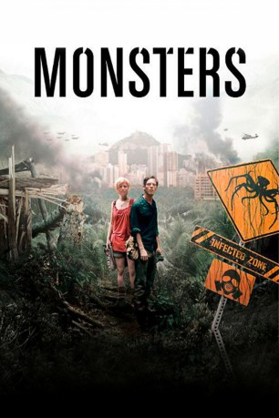

#59 Monsters
 
 IMDB-Wertung: 6.4 / 10
IMDB-Wertung: 6.4 / 10  Metascore: 63
Metascore: 63 
Durch ein missglücktes Experiment breitet sich eine auserirdische Lebensform im Grenzgebiet zwischen Mexico und den USA aus. Der Fotograf Andrew bekommt nun den Auftrag Sam, die Tochter seines Verlegers, aus dem Gefahrengebiet zurück in die USA bringen, bevor alle Wege geschlossen werden. Doch bevor sie mit der letzten Fähre fliehen können, werden sie ausgeraubt. Somit bleibt ihnen nur noch der Weg durch die infizierte Zone...
Jahr: 2010
Dauer: 94 Minuten
FSK: 12
Land: England Studio: Capelight PicturesTonspuren: DTS - ,
Untertitel:
Auflösung: 1080p (1920×816) Größe: 5171 MB
Genre: Drama, Sci-Fi, Thriller
Regisseur: Gareth Edwards
Drehbuch: Gareth Edwards
Soundtrack: Jon Hopkins
Darsteller:
 Scoot McNairy als Andrew Kaulder
Scoot McNairy als Andrew Kaulder- Whitney Able als Sam Wynden
- Annalee Jefferies als Homeless Woman
- Ricky Catter als Marine
- Stan Wong als Marine
- Mario Zuniga Benavides als Ticket Seller
- Justin Hall als Marine
- Paul Archer als Marine
- Kerry Valderrama als Marine
- Jonathan Winnford als Marine
- Anthony Cristo als Marine
- Mario Richardson als Marine
- Jorge Quirs als Marine
- Erick Arce als Marine
- Emigo Munkel als Marine
- Esteban Blanco als Marine
- Victor Vejan als Guerilla
- Cristopher Chararria als Guerilla
- Roman Bustamante als Guerilla
- Solamon Albarran als Guerilla
- Alejandro Sotero als Guerilla
- Victorino Angulo als Guerilla
- David Alba Garcia als Guerilla
- Eduardo Guizak als Guerilla
- Alfonso Pineda als Guerilla
- Jose Garcia Gomez als Guerilla
- Erika Morales Yolanda Chacon als Mother 'Erika', Bocoyna
- Elsa Rascon Gonzalez als Grandmother, Bocoyna
- Jose Luis Morales Chacon als Child of Family, Bocoyna
- Tamilez Morales Chacon als Child of Family, Bocoyna
- Jonathan Cadena Chacon als Child of Family, Bocoyna
- Cindy Vanessa Cadena Morales als Child of Family, Bocoyna
- Javier Acosta Rodriguez als Taxi Driver
- Victor Manuel Martinez Tovar als Boat Skipper
- Walter Hernandez Col als Boat Assistant
- Kenedy Gamaliel Jiminez als Driver of Pick-Up Truck to the Zone
- Hugo Valuerde als Motorbike Driver
- Roberto Saluzan als Ambulance Guy
- Cesan Solauo als Ambulance Guy
- Aris Martinez als Nurse in Maternity Ward
- Claudia Valdez als Nurse in Maternity Ward
- Elizabeth Blanco Sanchez als Main Receptionist at Hospital
- Gloria Soza als Second Receptionist at Hospital
- Aura Escobar als Third Receptionist at Hospital
- Max Alfredo Coe Tux als Man at River Guarding Oil Barrels
- Ivan Sanchez als Man at River Guarding Oil Barrels
- Wilfredo Hernandez Alvarado als Policeman Guarding Barrier
- Ramon Otzoy Sucuc als Policeman Guarding Barrier
- Erma Bradley als Lady Holding Daughter in Flood
- Shelmar Bradley als Boy in Pink Yop
Datei: X:\2010(G-M)\Monsters (2010, FSK12, 1920x816).mkv seit 02.02.2015
Festplatte: HD 2010(G-Z)-2011(A-F)
 Es gibt insgesamt 85 Filme in der Gruppe '2010(G-M)'
Es gibt insgesamt 85 Filme in der Gruppe '2010(G-M)'